No blocking finding. Frozen production0.11 at port5182 was reviewed at1440×960,1280×800 and390×844. Actual campaign exports were loaded unchanged; Hold, split, course movement and end-cycle actions used the UI. Separately labelled synthetic hull fixtures cover rounding boundaries.
Observed behavior
Actual cycle63: acknowledging five garrison formations and the observing scout changes only Hold metadata. N stops with a clear explanation; the roster still lists all seven fleets and distinguishes Holding from Spent. Keyboard Space activates Hold and keeps focus on Resume.
Holding the spent reinforcement preserves its course. With all formations acknowledged and the research tree complete, end cycle advances directly. Two new ships complete at64 and correctly await orders.
Actual cycle64 export/import/page reload preserves the full state exactly. Resume course moves the held reinforcement to Elysian and spends exactly one order and one move.
The damaged Stage10 export now displays67/68 consistently in the bar, orbit and roster. At1440/1280/390 the crowded repair/merge/Resume/split/heritage controls and held course remain usable. The mobile title’s separate row is clearer.
Splitting a held formation explains that the original remains held; the new detachment becomes selected and awaits orders. Keyboard count selection preserves focus.
A separate valid display fixture with67.999 hull shows<68/68; positive0.001 hull shows<0.1/170. The near-full split preview also shows<34/34. These values are not campaign-performance evidence.
In a fresh campaign, acknowledging all fleets still leaves the genuine unassigned-research warning. Assigning Logistics removes it and permits direct cycle advancement.
No browser page errors or horizontal document overflow occurred.
Verified follow-up on the final candidate
The empty-selection correction passed on port5183. Escape then N keeps selection empty, explains that no fleet awaits orders, and exposes Fleet roster directly. Clicking it lists all nine acknowledged fleets without an arbitrary Pathfinder selection. The final candidate’s asset hashes and exact text are preserved in follow-up evidence. Only this narrow path was retested on5183; the complete independent review above remains attributable to unchanged5182.
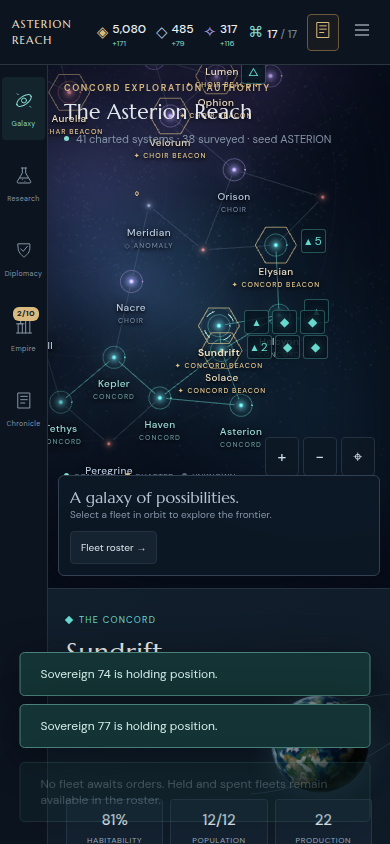
Final candidate: direct roster access after clearing selection.
Original finding, now resolved
After Escape clears selection and every fleet is acknowledged, N correctly leaves the empty bar and explains that held fleets remain in the roster. The only empty-bar button is currently Select fleet, which chooses Pathfinder and only then exposes the roster. Replace it with a direct Fleet roster button so the explanatory message leads to an immediately available action. This is a small usability correction, not an engine failure. Exact observation.
Engine review and reproduction
The independent engine review passed66 targeted rules. The legitimate cycle63 campaign with and without Hold metadata ran to Concord victory67 with identical simulation state after removing only Hold fields and exact reload equality every cycle. Actual Solace combat woke participating formations. Additional command checks covered foreign declaration, repeated acknowledged hostility, atomic failures, zero-budget toggles and hidden/adjacent state invariance.
The script archives exact commit8b07399c428ac5b3cc2120ba5b8c88acd0fa5d81 and reads the historical fixture from that same git commit, so later source changes do not alter the review. The portable rerun reproduced all nine original records exactly.
The frozen build identifies engine commit8b07399 and includes integrated UI working-tree additions; compiled asset hashes identify the exact reviewed UI bytes. No source files were changed during this review.
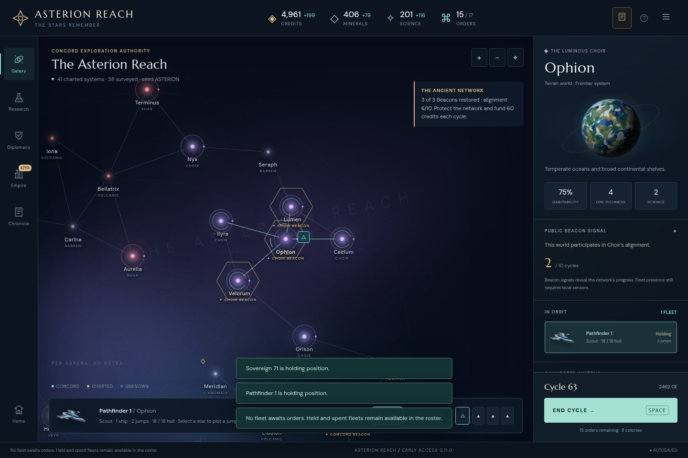
Six intentionally stationary formations held; N keeps selection and explains that none await orders.
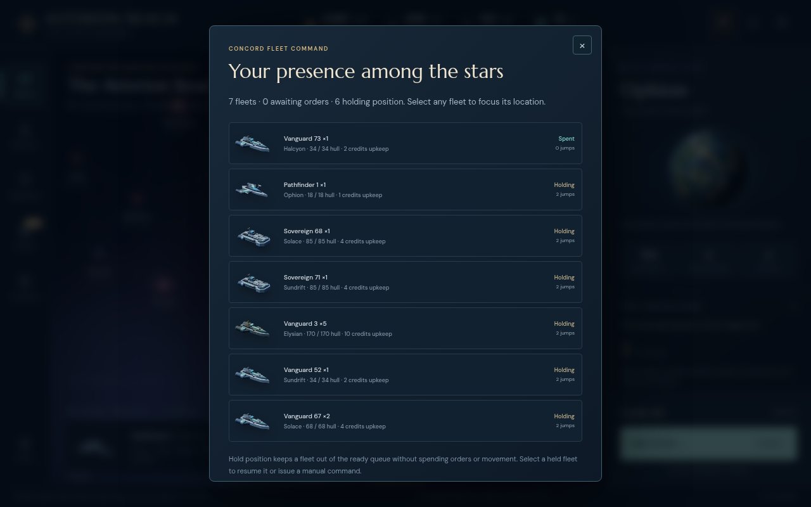
Roster keeps all seven fleets accessible and distinguishes six held formations from the spent expedition.
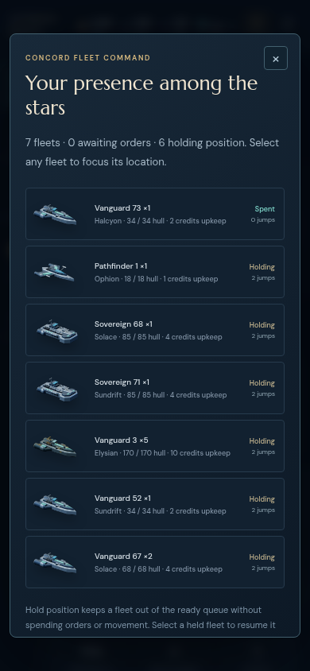
Mobile roster clearly separates Holding status from remaining movement.
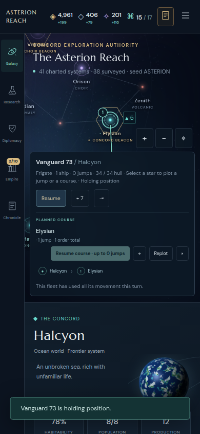
A spent expedition can be held without losing its saved route; Resume course is disabled until movement renews.
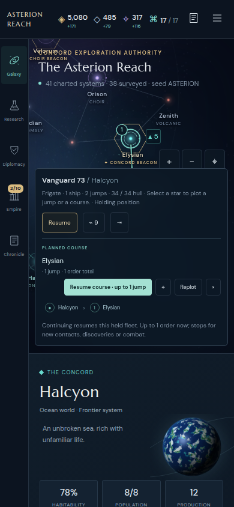
Actual cycle64 export/import/reload preserves Hold and course; Resume course clearly resumes paid movement.
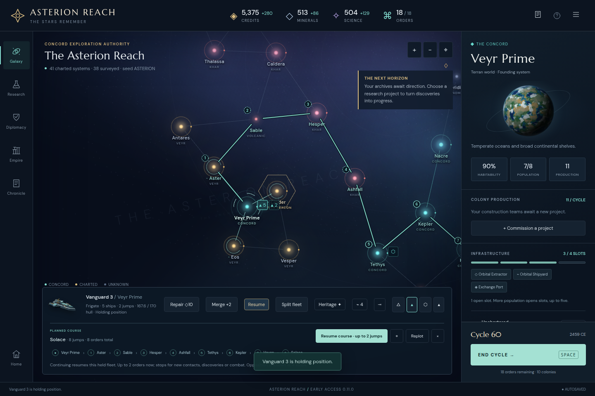
Original damaged formation with repair, merge, split, heritage, Resume, fleet controls and retained course.
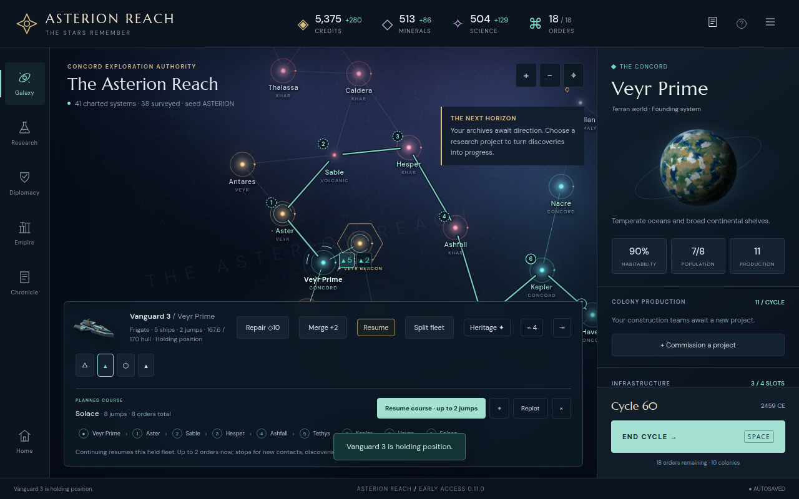
Original damaged formation with repair, merge, split, heritage, Resume, fleet controls and retained course.
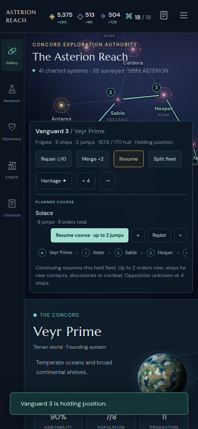
Original damaged formation with repair, merge, split, heritage, Resume, fleet controls and retained course.
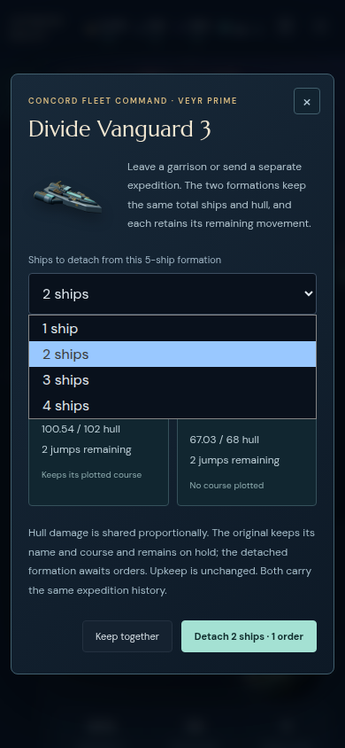
Keyboard count selector preserves focus; split note explicitly keeps the original on hold and detachment active.
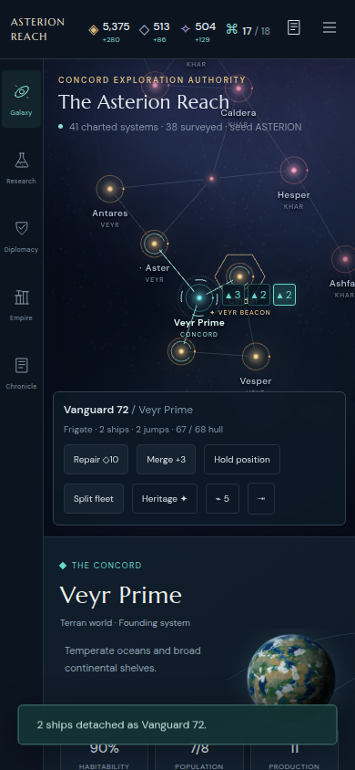
Detached formation is selected and active; the original garrison remains held.
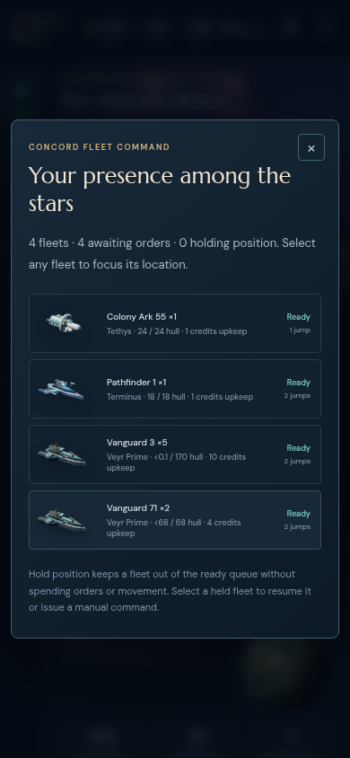
Clearly synthetic valid display fixture: nearly full hull remains <68/68; living tiny hull remains <0.1/170.
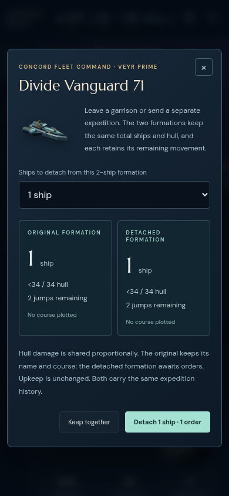
The same near-full rule survives the split preview’s two-decimal display.
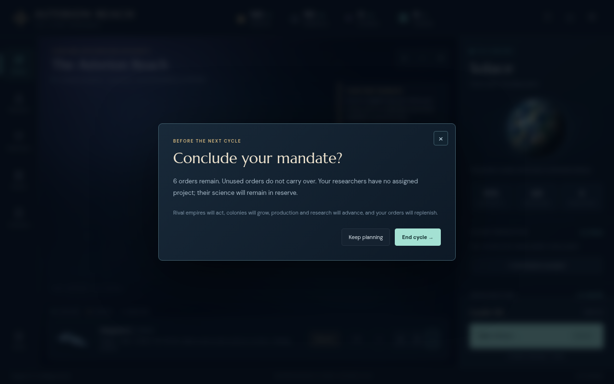
A fresh campaign with every fleet held still warns about a genuinely unassigned research project.
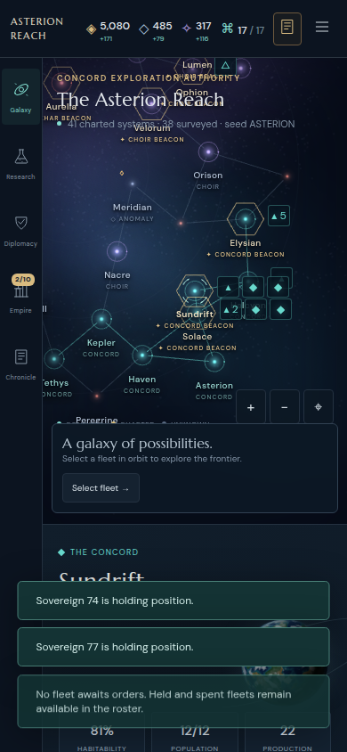
The empty selection needs direct access to the roster.